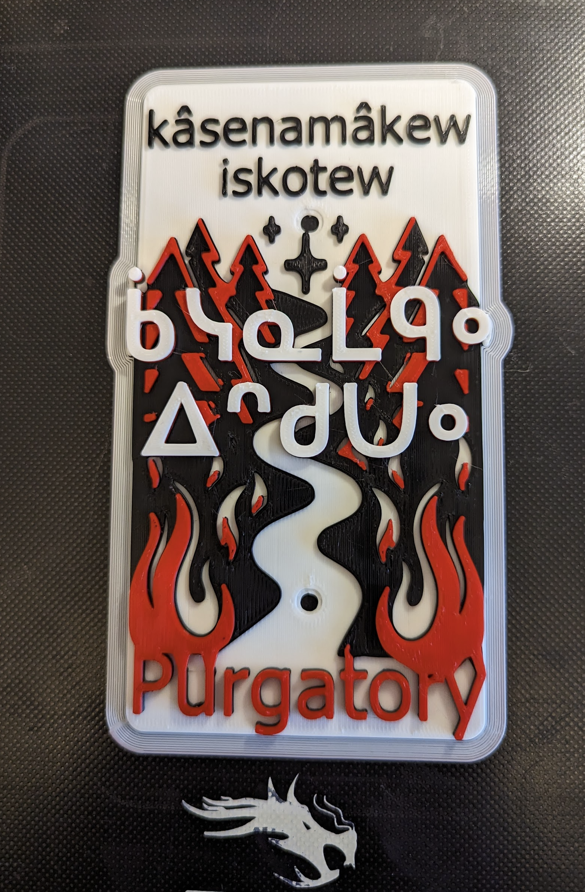

"Purgatory — literally 'the fire that refuses (people)', a cleansing-fire compound built from the verb kâsenamâkêw 's/he refuses (people)' and the noun iskotêw 'fire'."

The mounted Purgatory plaque on the wall: SRO 'kâsenamâkêw iskotew' / syllabics ᑳᓭᓇᒫᑫᐤ ᐃᐢᑯᑌᐤ with red flames flanking a winding river of fire.
In Catholic theology, purgatory is the in‑between place — neither heaven nor hell — where souls are held until they are purified by fire. The Plains Cree carved onto this plaque, kâsenamâkêw iskotêw, is a compact and quite precise calque of that idea: a fire (iskotêw) that refuses people (kâsenamâkêw 's/he refuses, rejects people' — itwêwina/Wolvengrey). It is the fire that holds you back at the threshold; the fire that says not yet.
Visually the plaque leans hard into that reading. Red and black flames frame the panel on both sides while a single white river meanders down the middle — souls funnelled between walls of fire, the cool white path threading between the heat. The Cree syllabics float above the flames in clean white block letters, the English 'Purgatory' anchors the bottom in red script. The four points/sparks above the syllabics read as embers, or possibly as stars — small fixed lights set against the moving fire below.
The trail itself is part of an Edmonton mountain‑bike sequence — sitting on the wall right beside paspîhiwêwin / 'Deliverance', which is the formally‑mapped Patricia Ravine Upper. Where Deliverance is the rescue out, Purgatory is the holding‑fire before it: same flame‑and‑river palette, opposite sides of the same theological hinge. The whole sequence is hung on ᓀᐦᐃᔭᐤ ᐊᐢᑭᕀ Nêhiyaw‑Askiy (Plains Cree territory), and is part of an ongoing effort to put Plains Cree names back on the everyday landscape of Edmonton trails.
Explore the trail on Trailforks, with a local preview from the uploaded GPX.
itwêwina headword (Wolvengrey/CW). The plaque's kâsenamâkêw is the people‑object (VTA) sibling of this VTI 'refuse it'.
Standalone form. Same noun used in iskotêwâpoy 'liquor' (lit. 'fire‑water') and iskotêwân 'a matchstick'.
kâsî‑ 'wipe / cleanse' is a structural near‑neighbour of kâseni‑ 'refuse', and the two are easy to confuse by ear. The Purgatory plaque sits at exactly that semantic pun: 'fire that refuses' vs. 'cleansing‑fire' both read.
| English | SRO | Syllabics |
|---|---|---|
| Purgatory — 'the fire that refuses (people)' | kâsenamâkêw iskotêw | ᑳᓭᓇᒫᑫᐤ ᐃᐢᑯᑌᐤ |
| S/he refuses, s/he rejects it (VTI base) | kâsenam | ᑳᓭᓇᒼ |
| Fire (NI) | iskotêw | ᐃᐢᑯᑌᐤ |
| S/he refuses people, s/he rejects people (VTA) | kâsenamâkêw | ᑳᓭᓇᒫᑫᐤ |
| Hellfire / a fire that burns severely | kâkikê iskotêw | ᑳᑭᑫ ᐃᐢᑯᑌᐤ |
SRO uses ê î ô â. Syllabics match the SRO shown.
Dialectal preferences may affect minor spelling choices; check local norms for signage.
References: itwêwina, Online Cree Dictionary, Plains Cree Dictionary
Each sign is 3D printed in Edmonton. Want one for your own trail, cabin or wall?